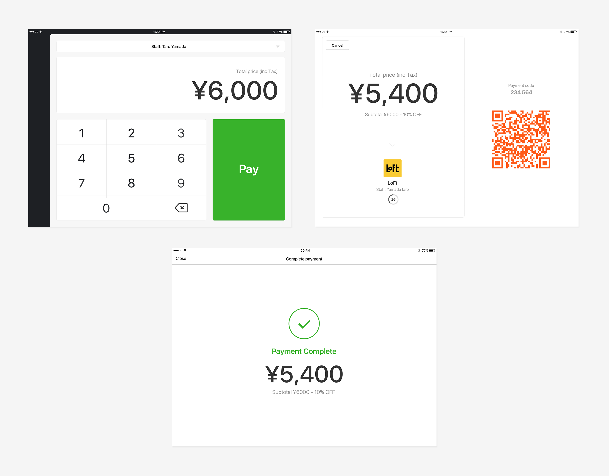
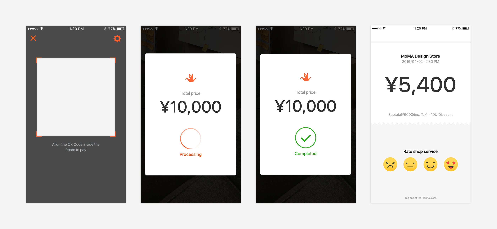

Origami is a mobile payment service to provide better shopping experience for both online and at physical stores by connecting shops and consumers. In the beginning when we just launched the payment system we utilized ibeacon to make payment transaction. After few months of testing and observing we learnt that the ibeacon was not scalable method as it had many environment constraints such as requiring bluetooth, connection speed and most of all it was not intuitive for people to make payments. As a result it was causing many transaction failure which was critical issue as a payment method provider.
In order to improve the overall experience of the pay experience we went on to re-design the entire UX for both shops and consumers.
For this product to be successful we focused on reducing the number of people using fallback payment method(6 digit pin) which was caused by iBeacon failure.
Shop register
Consumer app
Here is a quick demo of what we have successfully shipped as a first version. We will be working towards removing the iBeacon completely by monitoring the success of the transition from iBeacon to QR payment.